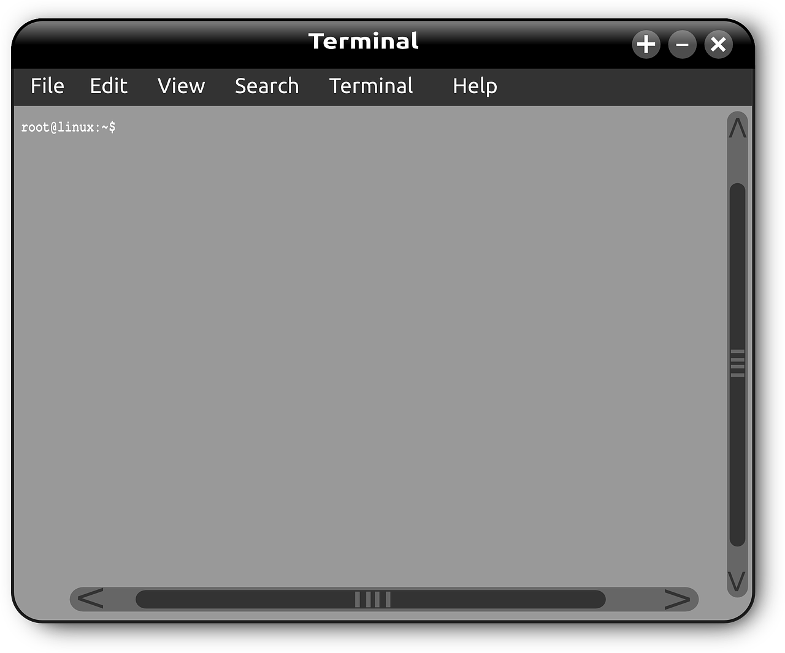

MDN Website Project
This is a visual example of a computer terminal. A terminal is a command processor which runs in a text window. Terminals can be used for:
- Updating programs via the internet
- Connecting to other devices using SSH
- Navigating the computer's directories
- Run installed programs
Bash is a command processor which runs in a text window, also known as a terminal.
Bash (Unix shell) Wikipedia Page